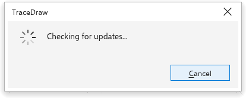

TraceDraw के बारे में और अपडेट
TraceDraw मुफ़्त और ओपन सोर्स है। यह पेज बताता है कि आपके पास कौन सा संस्करण है यह कैसे देखें, नया संस्करण कैसे पाएँ और मदद कहाँ माँगें।
परिचय बॉक्स
चल रहा संस्करण, लेखक, लाइसेंस, सोर्स कोड का लिंक और प्रोग्राम किससे बना है, यह देखने के लिए सहायता > TraceDraw के बारे में चुनें। बंद करने के लिए बंद करें, Enter या Esc दबाएँ।

अपडेट जाँचना
डेस्कटॉप पर, TraceDraw आपको बता सकता है कि नया संस्करण कब जारी हुआ।
अभी जाँचने के लिए:
- सहायता > अद्यतन चुनें।
- TraceDraw प्रोजेक्ट के रिलीज़ पेज से नवीनतम संस्करण पूछता है और बताता है कि वह आपके संस्करण से नया है या नहीं। टेस्ट बिल्ड और नाइटली बिल्ड कभी पेश नहीं किए जाते।
- नया संस्करण होने पर चुनें कि क्या करना है:
- डाउनलोड करें आपके सिस्टम के लिए फ़ाइल का डाउनलोड खोलता है (Windows पर इंस्टॉलर या पोर्टेबल आर्काइव, Mac के प्रोसेसर के लिए डिस्क इमेज, Linux पर AppImage या आर्काइव)। इंस्टॉल करने का काम फिर आपके सिस्टम का इंस्टॉलर करता है।
- रिलीज़ नोट्स उस संस्करण के बदलावों की सूची खोलता है।
- यह संस्करण छोड़ें उस संस्करण को पेश करना बंद कर देता है।
- बंद करें बॉक्स बंद करता है।
जब TraceDraw Linux AppImage के रूप में चलता है, तो बॉक्स इंस्टॉल करें भी पेश कर सकता है: यह नया AppImage चल रहे AppImage के बगल में डाउनलोड करता है, जाँचता है कि डाउनलोड पूरा और असली है, और उसे पुरानी फ़ाइल की जगह रख देता है। नया संस्करण अगली बार TraceDraw खोलने पर शुरू होता है। अगर कुछ ठीक नहीं बैठता, तो पुरानी फ़ाइल जैसी थी वैसी रहती है और बॉक्स कारण बताता है।
अगर जाँच विफल हो जाए (उदाहरण के लिए इंटरनेट कनेक्शन के बिना), तो बॉक्स यह बताता है और रिलीज़ पेज पेश करता है।

अपने-आप जाँचना
टूल > विकल्प > वैश्विक, पेज सामान्य, में शुरू होने पर अपडेट जाँचने की सेटिंग है। यह शुरू में चालू रहती है: दिन में एक बार TraceDraw शुरू होते समय चुपचाप जाँचता है और तभी बताता है जब कोई ऐसा नया संस्करण आया हो जिसे आपने छोड़ा नहीं है।
पहली बार शुरू होने पर TraceDraw पूछता है कि अपडेट जाँचे या नहीं: हमेशा जाँचें या कभी न जाँचें। जब तक आप उत्तर नहीं देते, TraceDraw अपने आप कोई कनेक्शन नहीं बनाता। आपका उत्तर यह विकल्प सेट करता है, जिसे आप यहाँ कभी भी बदल सकते हैं।
स्वागत स्क्रीन
स्वागत स्क्रीन TraceDraw शुरू होने पर पहला टैब होती है। यहाँ से आप ड्रॉइंग बना सकते हैं, हाल में इस्तेमाल किए गए ड्रॉइंग में से कोई खोल सकते हैं (हर एक थंबनेल के साथ; सूची साफ़ करें उन्हें भुला देता है), टेम्पलेट से शुरू कर सकते हैं, समाचार पढ़ सकते हैं और सीखने की सामग्री पा सकते हैं। इसे वापस लाने के लिए सहायता > स्वागत स्क्रीन चुनें। सहायता > वीडियो ट्यूटोरियल, त्वरित आरंभ मार्गदर्शिका और उपयोगकर्ता मार्गदर्शिका इसका सीखने का पेज खोलते हैं, और नया क्या है? इसके समाचार।
समुदाय और सहायता
- सहायता > समुदाय प्रोजेक्ट का चर्चा फ़ोरम खोलता है, जहाँ आप सवाल पूछ सकते हैं और विचार साझा कर सकते हैं।
- सहायता > सहायता केंद्र इश्यू ट्रैकर खोलता है, जहाँ आप किसी समस्या की रिपोर्ट कर सकते हैं।
- सहायता > संदेश सेटिंग्स वे विकल्प खोलता है जहाँ TraceDraw के संदेश सेट किए जाते हैं।